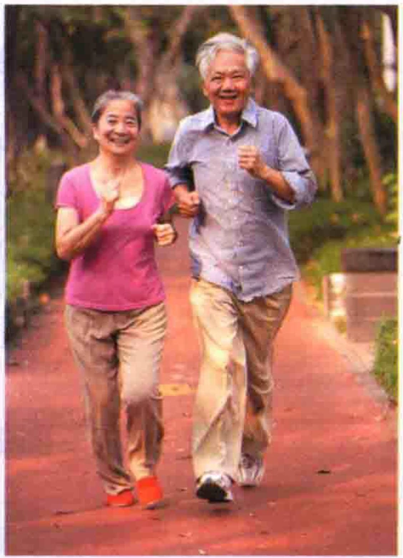

标准教程5（上）Стандартный курс 5 (том I)扩展РасширениеExpansionРасширение
话题Тема
HSK（五级）话题分类词语Тематическая лексика HSK 5
人体Тело человека
головашеяплечогрудьталияспинапалецбровьгорлозуб做一做：从上表中选择合适的词语填空Попробуйте: заполните пропуски словами из таблицы.（1）你的好像一边高一边低，我建议你去买个双肩包。(1) Ваши ___ будто на разной высоте; советую купить рюкзак.（2）早上起来，伸个懒，真舒服！(2) Встав утром, потяните ___ — как приятно!（3）他长着两条又黑又粗的，一双大大的眼睛。(3) У него две чёрные густые ___ и большие глаза.(4)讲了一天的课，老师的都疼了。(4) После целого дня занятий у преподавателя болит ___.运用ПрименениеApplicationПрименение背景分析：Анализ ситуации:在这个世界上，人和人之间会有各种各样的关系，比如同学关系、同事关系、邻居关系等，而人际关系中最亲密的一种关系，应该是夫妻关系了。无论是中国人还是外国人，都很重视自己的婚姻。有人认为夫妻之间最重要的是恩爱，有人说是诚实，也有人说是关爱和理解。相信你对课文中讲的三对夫妻的故事也会有自己的看法。В мире существуют разные отношения между людьми: одноклассниками, коллегами, соседями и другими. Самыми близкими межличностными отношениями, пожалуй, являются супружеские. И китайцы, и иностранцы ценят свой брак. Одни считают главным любовь, другие — честность, заботу и понимание. Наверняка у вас есть своё мнение об историях трёх пар из текста.

话题讨论：理想的夫妻关系是什么样的？Обсуждение: какими должны быть идеальные отношения супругов?1.本文提到的三对夫妻中，哪对夫妻给你留下的印象最深?1. Какая из трёх пар в тексте произвела на вас самое сильное впечатление?2.这对夫妻的什么地方让你感动？为什么?2. Что в этой паре вас тронуло? Почему?3.你认为理想的夫妻关系应该是什么样的?3. Какими, по вашему мнению, должны быть идеальные отношения супругов?命题写作：Тема сочинения:请以“理想的夫妻关系”为题写段话。尽量上本课所学的词，字数不少于100字Напишите текст на тему «Идеальные отношения супругов». Постарайтесь использовать новые слова урока; объём — не менее 100 иероглифов.8